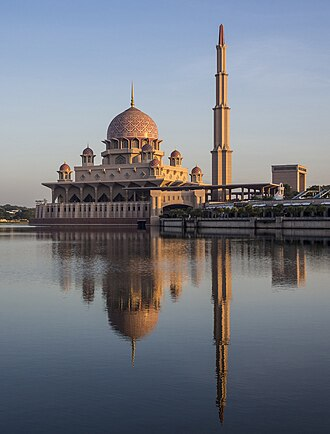

แนะนำ
La mosquée Putra est la mosquée centrale de Putrajaya en Malaisie.
مسجد بوترا هو المسجد الرئيس في مدينة بوتراجاي بماليزيا. بدأ بناء المسجد عام 1997 واكتمل بعد عامين، ويقع في ساحة بوترا، بجوار بحيرة بوتراجاي الاصطناعيَّة.
The Putra Mosque is the principal mosque of Putrajaya, Malaysia. Construction of the mosque began in 1997 and was completed two years later.
Masjid Putra adalah sebuah masjid yang berada di kota Putrajaya, Provinsi Putrajaya, Malaysia. Masjid ini awalnya dibangun pada tahun 1997 menggunakan bahan granit merah mawar dan terdiri dari tiga area fungsional; ruang salat, halaman masjid, dan madrasah. Masjid yang terletak di Alun-Alun Putra dan bersebelahan dengan Danau Putrajaya ini, dapat menampung 15.000 jemaah sekaligus.
مسجد پُوترا، جسے مسجدِ سرخ بھی کہا جاتا ہے، ملیشیا کی خوبصورت ترین مساجد میں سے ایک ہے۔ یہ مسجد وفاقی دار الحکومت کوالا لمپور میں واقع پُوتراجایا کی مصنوعی جھیل کے کنارے بنی ہے اور اس میں 15 ہزار سے زائد نمازیوں کی گنجائش ہے۔ اس کی تعمیر 1999ء میں مکمل ہوئی۔
Die Putra-Moschee ist die Hauptmoschee von Putrajaya, Malaysia. Sie ist nach Almarhum Tunku Abdul Rahman Putra Al Haj benannt, dem ersten Premierminister Malaysias.
La mezquita Putra es la principal mezquita de Putrajaya, la capital administrativa de Malasia.
De Putra-moskee is de belangrijkste moskee van Putrajaya op het vasteland van Maleisië. De bouw van de moskee begon in 1997 en was twee jaar later voltooid.
布特拉清真寺，俗稱玫瑰清真寺、粉紅清真寺、水上清真寺，是馬來西亞行政首都布城的一所清真寺，位於布城湖旁。毗鄰布城首相署和布特拉廣場。
푸트라 모스크(말레이어: Masjid Putra, 자위 문자: مسجد ڤوترا)는 말레이시아 푸트라자야에 위치한 모스크이다. 1997년에 착공하여 2년 후인 1999년에 완공되었다. 푸트라 모스크는 말레이시아 총리실과 인공 호수 푸트라자야호가 있는 페르다나 푸트라 옆에 위치하고 있으며 푸트라 광장에 위치해 있다. 모스크 앞에 말레이시아 깃대와 큰 광장이 있다.
पुत्रा मस्जिद मलेशिया के पुत्रजया शहर की प्रमुख मस्जिद है। इसका निर्माण 1997 में शुरू हुआ और दो साल बाद पूरा हुआ।
มัสยิดปูตรา เป็นมัสยิดที่สำคัญในปูตราจายา ประเทศมาเลเซีย มัสยิดเริ่มก่อสร้างเมื่อปี 1997 จนแล้วเสร็จอีก 2 ปีถัดมา ตั้งอยู่ข้างกับเปอร์ดานาปูตรา ซึ่งเป็นทำเนียบรัฐบาลของมาเลเซีย และทะเลสาบปูตราจายา ทะเลสาบที่สร้างโดยมนุษย์ ด้านหน้าของมัสยิดยังมีจตุรัสที่ประดับด้วยธงแต่ละรัฐของมาเลเซีย
Putra-moskén, eller Masjid Putra på malajiska, är huvudmoskén i Putrajaya, Malaysia. Byggandet av moskén började 1997 och avslutades två år senare. Den är belägen invid Perdana Putra, där Malaysias premiärminister har sitt kontor.
บนแผนที่
เอกสารและลิงก์
- Wikipédia — Français
- Wikipédia — العربية
- Wikipédia — English
- Wikipédia — Bahasa Indonesia
- Wikipédia — اردو
- Wikipédia — Deutsch
- Wikipédia — Español
- Wikipédia — Nederlands
- Wikipédia — 中文
- Wikipédia — 日本語
- Wikipédia — 한국어
- Wikipédia — हिन्दी
- Wikipédia — Русский
- Wikipédia — ไทย
- Wikipédia — Svenska
- Wikidata — Q2344561
ข้อมูล: วิกิสนเทศ (CC0) ปรับปรุงทุก 3 เดือน ปีที่แสดงคือปีที่สร้างอาคารเก่าที่สุดที่ทราบ: สำหรับอาคารที่กลายเป็นมัสยิดภายหลัง (เช่น ฮาเจียโซเฟีย) จะเป็นปีของอาคารเดิม ภาพถ่าย: วิกิมีเดียคอมมอนส์ ผู้ถ่ายและสัญญาอนุญาตอยู่ในหน้าของแต่ละภาพ